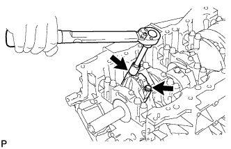
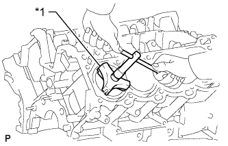

CYLINDER BLOCK > DISASSEMBLY |
| 1. INSPECT CONNECTING ROD THRUST CLEARANCE |
Using a dial indicator, measure the thrust clearance while moving the connecting rod back and forth.
| 2. INSPECT CONNECTING ROD OIL CLEARANCE |
Check the matchmarks on the connecting rod and cap to ensure correct reassembly.
Remove the 2 connecting rod cap bolts.
Using the 2 removed connecting rod cap bolts, remove the connecting rod cap and lower bearing by wiggling the connecting rod cap right and left.
Clean the crank pin and bearing.
Check the crank pin and bearing for pitting and scratches.
If the crank pin or bearing is damaged, replace the bearings. If necessary, replace the crankshaft.
Lay a strip of Plastigage across the crank pin.
| *1 | Plastigage |
Check that the front mark of the connecting rod cap is facing forward.
| *1 | Front Mark |
 | Front |
Apply a light coat of engine oil to the threads of the connecting rod cap bolts.
|  |
Install the connecting rod cap bolts.
Step 1:
Install and alternately tighten the bolts of each connecting rod cap in several steps.
Mark the front side of each connecting rod cap bolt with paint.
Step 2:
Tighten the cap bolts 90°.
Check that the paint mark is now at a 90° angle to the front.
Remove the 2 connecting rod cap bolts.
Using the 2 removed connecting rod cap bolts, remove the connecting rod cap and lower bearing by wiggling the connecting rod cap right and left.
Measure the Plastigage at its widest point.
| *1 | Plastigage |
| *2 | Number Mark |
| *3 | No. 1 Crankshaft Pin |
| *4 | No. 2 Crankshaft Pin |
| *5 | No. 3 Crankshaft Pin |
| *6 | No. 4 Crankshaft Pin |
| Item | Number Mark | ||||||||||||
| Connecting rod | 1 | 2 | 1 | 2 | 3 | 2 | 3 | 4 | 3 | 4 | |||
| Crankshaft | 1 | 2 | 1 | 3 | 2 | 1 | 3 | 2 | 1 | 3 | 2 | 3 | |
| Use bearing | 2 | 3 | 4 | 5 | 6 | 7 | |||||||
| Item | Specified Condition |
| Mark 2 | 1.489 to 1.492 mm (0.0586 to 0.0587 in.) |
| Mark 3 | 1.492 to 1.495 mm (0.0587 to 0.0589 in.) |
| Mark 4 | 1.495 to 1.498 mm (0.0589 to 0.0590 in.) |
| Mark 5 | 1.498 to 1.501 mm (0.0590 to 0.0591 in.) |
| Mark 6 | 1.501 to 1.504 mm (0.0591 to 0.0592 in.) |
| Mark 7 | 1.504 to 1.507 mm (0.0592 to 0.0593 in.) |
| Item | Specified Condition |
| Mark 1 | 56.000 to 56.006 mm (2.20472 to 2.20496 in.) |
| Mark 2 | 56.006 to 56.012 mm (2.20496 to 2.20519 in.) |
| Mark 3 | 56.012 to 56.018 mm (2.20519 to 2.20543 in.) |
| Mark 4 | 56.018 to 56.024 mm (2.20543 to 2.20566 in.) |
| Item | Specified Condition |
| Mark 1 | 52.994 to 53.000 mm (2.08637 to 2.08661 in.) |
| Mark 2 | 52.988 to 52.994 mm (2.08614 to 2.08637 in.) |
| Mark 3 | 52.982 to 52.988 mm (2.08590 to 2.08614 in.) |
Completely remove the Plastigage.
Perform the inspection above for each cylinder.
| 3. REMOVE PISTON AND CONNECTING ROD |
|  |
Using a ridge reamer, remove all the carbon from the top of the cylinder.
| *1 | Ridge Reamer |
Push out the piston with connecting rod and upper bearing through the top of the cylinder block.
| 4. REMOVE CONNECTING ROD BEARING |
Remove the connecting rod bearings from the connecting rods and connecting rod caps.
| 5. REMOVE PISTON RING SET |
Using a piston ring expander, remove the 2 compression rings.
Remove the 2 side rails and oil ring (expander) by hand.
| 6. REMOVE PISTON WITH PIN SUB-ASSEMBLY |
Disconnect the connecting rod from the piston.
Using a screwdriver, pry out the 2 snap rings.
Gradually heat the piston to approximately 80°C (176°F).
Using a plastic-faced hammer and brass bar, lightly tap out the piston pin and remove the connecting rod.
Clean the piston.
Using a gasket scraper, remove the carbon from the piston top.
 |
Using a groove cleaning tool or broken ring, clean the piston ring grooves.
Using solvent and a brush, thoroughly clean the piston.
| 7. INSPECT CRANKSHAFT THRUST CLEARANCE |
 |
Using a dial indicator, measure the thrust clearance while prying the crankshaft back and forth with a screwdriver.
| 8. REMOVE CRANKSHAFT |
Uniformly loosen and remove the 10 bearing cap bolts and 10 seal washers in several steps in the sequence shown in the illustration.
 |
Uniformly loosen and remove the 20 bearing cap bolts in several steps in the sequence shown in the illustration.
Using a screwdriver, slightly pry up the 5 main bearing caps.
| *1 | Protective Tape |
| *2 | Cylinder Block |
| *3 | Bearing Cap |
| *4 | Joint Surface |
Using 2 inside position main bearing cap bolts, loosen each main bearing cap by moving it forward and backward, and remove the 5 main bearing caps and 2 lower thrust washers (No. 3 crankshaft bearing cap only).
Lift out the crankshaft.
| 9. REMOVE CRANKSHAFT BEARING |
Remove the crankshaft bearings from the bearing caps and cylinder block.
| 10. REMOVE CRANKSHAFT THRUST WASHER SET |
Remove the thrust washer set from the cylinder block and No. 3 bearing cap.
| 11. REMOVE NO. 1 OIL NOZZLE SUB-ASSEMBLY |
 |
Using a 5 mm hexagon wrench, remove the 4 bolts and 4 No. 1 oil nozzles.
| 12. REMOVE STUD BOLT |